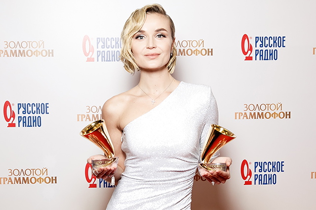

| МИСиС | МАИ | |
|---|---|---|
| Общежитие | Два студгородка и “Дом-коммуна”. Находятся в 15 минутах езды на метро. Студгородки – очень современные. Есть все, что может понадобится. “Дом-коммуна — не только общежитие, но и памятник архитектуры эпохи конструктивизма. В 2013 году завершилась его реконструкция, и теперь здесь живут магистранты и аспиранты НИТУ «МИСиС»”. Старое советское здание. | Студгородок из 9 общежитий. Находится в минуте ходьбы от Вуза. Современные хорошие здания. Есть Wi-Fi, в большинстве общежитий есть тренажерный зал и боталка. В некоторых общежитиях есть буфеты и библиотеки. |
| Мисс Вуза | Присцилла Чан | Полина Гагарина
 |
| Здание | Хорошее | Пока что не разваливается |
| Уровень доступности девушек | В основном в МиСис учатся не самые красивые девушки, откуда самооценка у них страдает. Отсюда, уровень доступности – зеленый. | В МАИ учатся настолько глупые девушки, что они считают себя умными. То есть глупые девушки с высокой самооценкой. Уровень доступности – желтый. |
| Основная национальность студентов | Азиатики | Славяне |
| Упоминания в культуре | SQWOZ BAB - Хостел | |
| Выдающиеся личности | Игорь Мамай Михаил Маратович Фридман — российский миллиардер. Придумал «Альфа-Банк» Егор Крид |
Сергей Слотин Аубакиров Тохтар Онгарбаевич (1946) – первый космонавт Казахстана, летчик-испытатель Егор Крид |
| Прошлое | Московский институт стали имени И. В. Сталина Поэтому если вы радикальный антисталинист, Мисис не для вас. |
Московский ордена Ленина, ордена Октябрьской Революции авиационный институт им. Серго Орджоникидзе Поэтому если вам не нравится что-то из списка выше, МАИ не для вас. |
Студия дизайна Артема Лебедя: Есипов Иван(@estacada), Антрушин Евгений(@piezzacondoleezza), Степкин Степан(@sorrynoclip). 2020.
Любые совпадения случайны, авторы никого не стремятся обидеть. Все персонажи вымышлены. Любая нецензурщина пресечена.